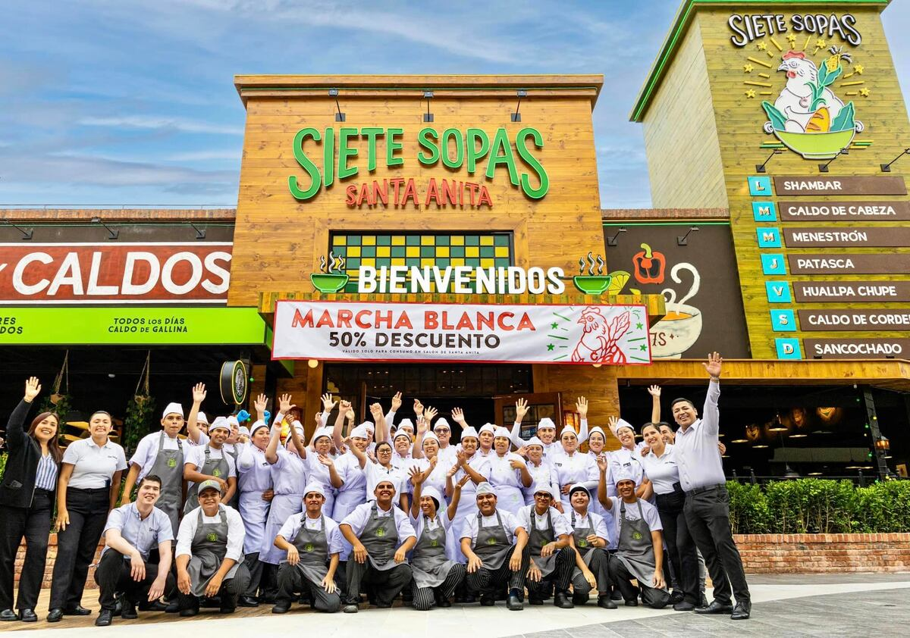
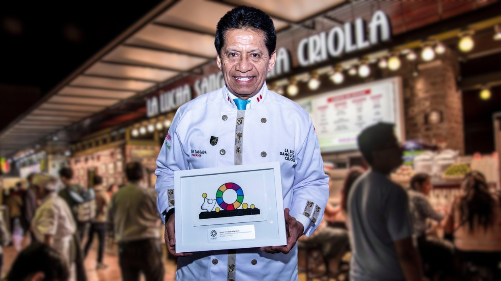
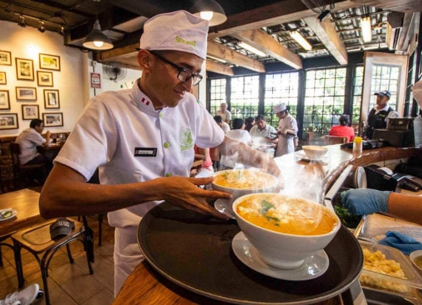

Historia de Siete Sopas
En Siete Sopas, nacimos con la idea de ofrecer platos tradicionales de la gastronomía peruana, con un enfoque único en las sopas, una de las bases más sabrosas y nutritivas de nuestra cultura. Desde nuestra fundación, hemos trabajado para que cada cliente disfrute de una experiencia culinaria única y auténtica, utilizando solo ingredientes frescos y de calidad.

Misión
Brindar a nuestros clientes la mejor experiencia gastronómica a través de sopas deliciosas, saludables y llenas de tradición, en un ambiente acogedor, con un servicio excepcional y con compromiso hacia la sostenibilidad y el desarrollo de la comunidad.

Visión
Ser una cadena de restaurantes reconocida en Perú y en el mundo por su excelencia en la preparación de sopas, siendo referente de la gastronomía peruana y ofreciendo platos innovadores que conquisten los paladares de nuestros clientes.

Propuesta Única
Nuestra propuesta única radica en ofrecer a los clientes una experiencia única en cada plato. Nos especializamos en sopas peruanas tradicionales, pero con un toque moderno y creativo. Además, nuestro menú incluye opciones saludables y adaptadas a diferentes gustos y necesidades alimenticias.